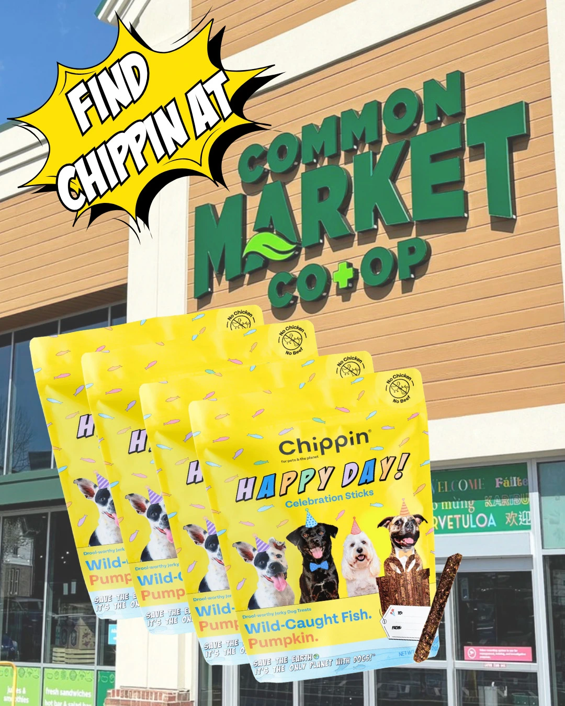
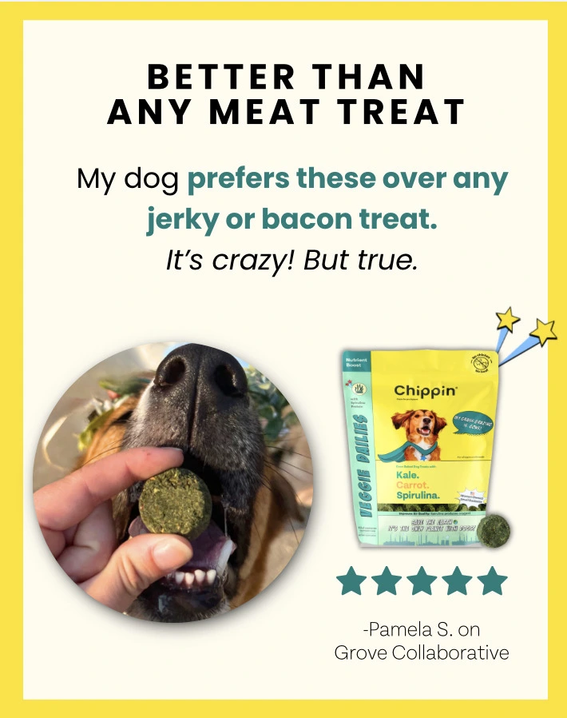
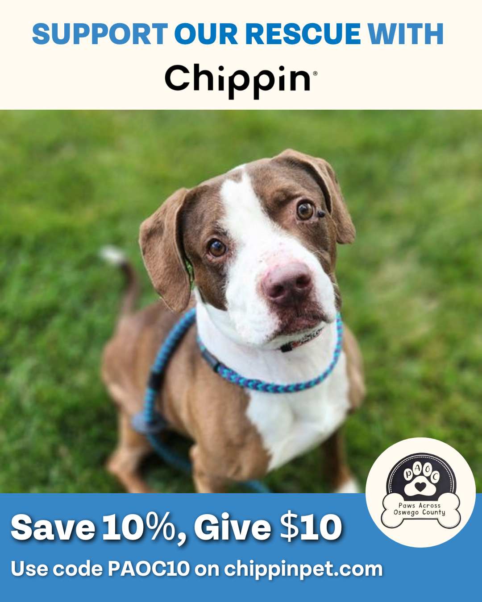
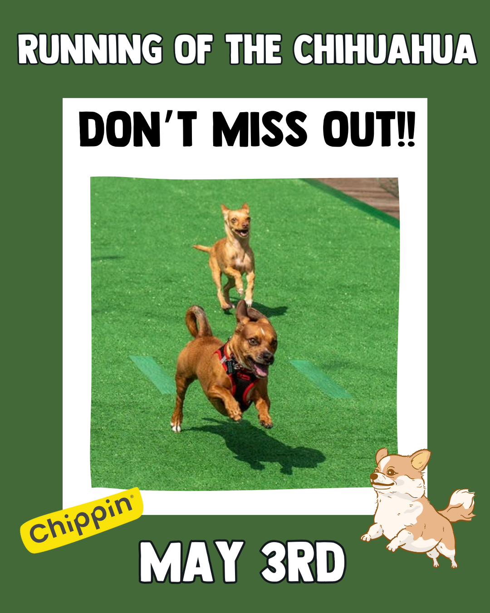
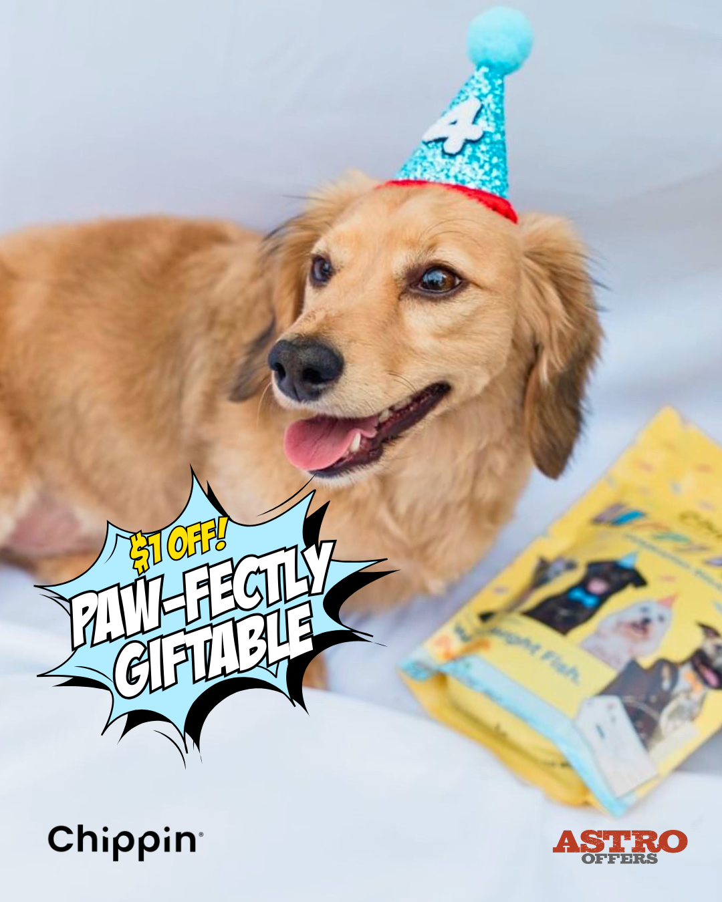

Internship
Chippin
Social carousels, promotions, and email headers for an eco-friendly dog food brand, built to match its playful, sustainable identity.
- Carousels
- Email Headers
- Event Promos